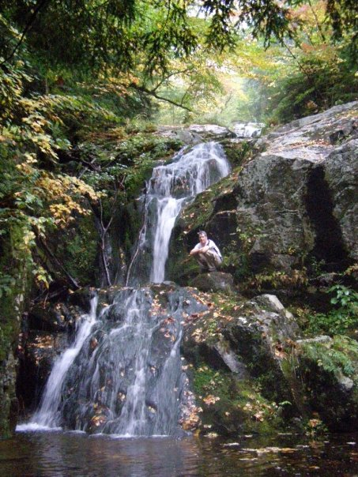
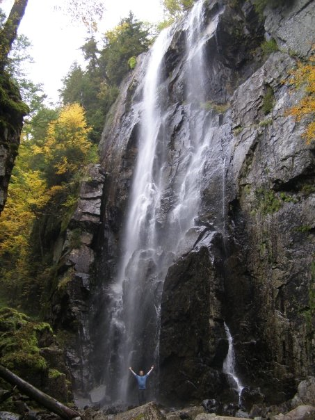
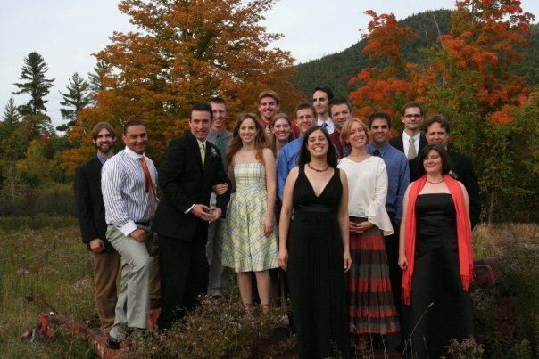
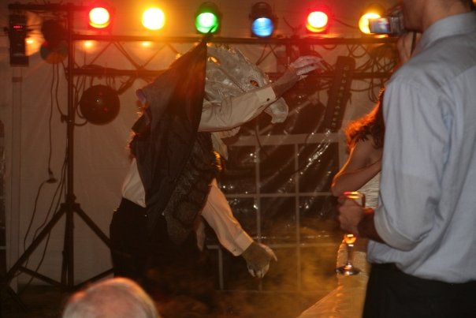
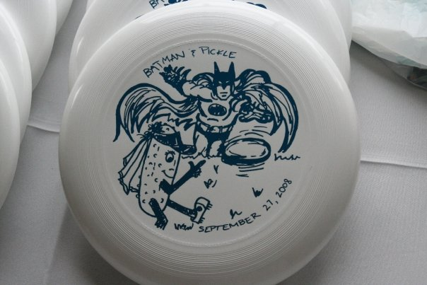

I've been waiting to wield the gun for a long, long time: the magical wedding registry gun that puts unbridled consumerism in the palm of my hand at no financial cost to myself. *POW* buy us this. *ZAP* buy us that. I'm usually not a materialistic super shopper, but in this case I couldn't wait.
Luckily upcoming bridal showers recently sent Kyle and I to Bed Bath & Beyond to set up our first wedding gift registry. Sadly they didn't allow us to run wild with the scanning gun. Instead we received a guide, who clearly needed to get through several contractual obligations:
1. Ask how we met. (Which she misheard as extreme frisbee, which she repeated several times.)
2. Ask for the proposal story. (Which she said was the best story she had ever heard. And I imagine she hears a lot of stories.)
3. Ask about the destination for our honeymoon. (I love the confusion/shock/awe on people's faces whenver they hear our response.)
4. Ask what kind of china we want. (We don't.)
5. Ask what kind of toasting flute we want. (We don't.)
6. Ask what kind of china we want, again. (No, really, it's ok. I have my grandmothers' china. Let's move on already. I didn't believe you when you said this process might take 3 hours, but now I do.)
It took some effort to make her understand how little we needed china or any plates of any kind, but eventually we made it into the main part of the store. She was very helpful when we had trouble choosing among different brands, though I think her attention to the finer (aka unnecessary and expensive) things in life, her repetition of "extreme frisbee," and the sheer length of the process when we had to be guided slowly through each section started to get on Kyle's nerves. Luckily he was able to entertain himself (and me) with the amazing animal potholders that doubled as hand puppets.
We never did get to hold the gun, but we were able to ask her to point it at plenty of fun things. Well, we thought it was plenty of things, but apparently we're well under the recommended number of items, which is 3x the guest count. I'm not sure there are that many items in the BB&B store, and we really don't need online offerings such as relationship remotes or an inflatable mortuary. We also turned down the rice cooker that was highly recommended by our guide, even though Kyle is incapable of cooking rice properly. (And yes he's usually a better cook than I am, but I'll take whatever victories I can get.) We ended up with about 50 items, which you can find by entering our names here if you're interested. We've also started a registry at Amazon.com, which is much more eclectic and entertaining. Some of the gift suggestions were chosen together, but many are clearly tied to one recipient. (Guess who wants Newsies and a Shakespeare watch, and who wants camping supplies and Linux books? I know, it's tricky.) It also allows for joke items like the $15,500.00 Soccer Simulator.
Despite the delight of making gift lists Kyle and I are very capable of buying things ourselves, which we proved after emerging from Beyond. We ran around to Borders, Target, the grocery store and a few other places and came home with a load of items. Our best find by far: a coffee and expresso maker, orginially over 100 dollars, for $17. It was just sitting there on the Target clearance shelf, boxless, dusty, and a little banged up but just begging us to take a chance on it. Imagine our surprise when we got it home and it actually worked! It isn't an easy one step process, in fact you might need a degree in chemistry and burn treatment in order to use it without messing up a few times, but eventually it will serve up a steaming pot of expresso and steamed milk deliciousness.
Since Jillian's Frisbee teammates were going to be throwing her a bridal shower, we decided it'd be a good idea to actually register for some gifts. Demonstrating my complete lack of knowledge regarding weddings, I foolishly thought this might take an hour so, while we walked around joyfully scanning items in some large retailer.
First we went to Safeway, to pick up some non-perishable dinner supplies. We did not register here.
Then we went to Bed, Bath and Beyond. We were filled with anticipation at the thought of walking around scanning things that would look good in my (our?) apartment. Imagine my surpise when we were assigned a consultant. She talked with us at length, mostly listened to the story of our engagement, and told us all about how we'd need to register for hundreds of items. She even had us sign up for their free wedding website. We did it, though we already had one, mostly for the reception seating planner. Apparently Jillian wants to think about how people should be arranged, rather than have me write a program to optimally place them based on their relationships to other people.
We only started to get concerned when the consultant walked around with us to each "room" under the guise of helping us move through as quickly as possible. She also did an excellent job trying to upsell everything we considered. But our principle problem is that we don't need much. A new trash can would be nice, but I've been living out of my parent's house for over three years, and completely alone since this summer. I'm having trouble thinking of things that won't end up just sitting in my nonexistent attic. Early on, we found some Kitchen Pals Silicone Pot Holders. I spent the next two hours using one as a puppet to talk to both our "consultant" and Jillian. We registered for about 36 items, some of which we later took off, on account of my refusing to expect anybody to buy me a $70 sauce pan. That's about an item every 4 minutes. Suppose the consultant didn't do a very good job of moving us through there, though she was very kind.
We thought we'd hit up Border's next, mostly because my Aunt and Uncle (Thanks!) gave me a gift card for my birthday. Also, because Jillian wanted to go. But mostly because I had a gift card and the car keys. When I originally received the gift card, it was with instructions to use it to find a book that would help us on our journey. First, I bought Bicycling Magazine's The Complete Book of Long-Distance Cycling to help us deal with the training and pain that we're likely to encounter over the next few months. We also bought Bill Bryson's The Lost Continent: Travels in Small-Town America
, which might be the funniest book I've ever read. Mostly it will serve to help us avoid certain towns. For example, Gettysburg in the 80s, DC in the 60s, and Des Moines, always, are places to steer away from.
After Borders, we hit up Target. This time we decided to walk around and see if there was anything worth registering for. There wasn't. But there was a display of open box appliances. Right in the middle of it was an espresso/coffee maker/milk steamer. Plus, it was only $17! We purchased it immediately, not sure if it would work, but ready for an exciting weekend project.
Then we went to Home Depot, and bought a part for my toilet. It hadn't been flushing right. Toilets are the perfect way to end a day of thinking about a wedding.
When we got home, we had a lot of stuff.
I immediately set about trying to make some quality espresso drink. I thought I'd start with something relatively harmless, like steaming milk. After all, what could go wrong? Well, two things. First, I poured water down the wrong opening in the machine, soaking the insides of it and getting water all over my counter. Second, steamed milk gets very big. I'd say it can double in size, if you're not careful. And if you're really not careful, and unscrew the steamer valve too far, it'll fall off, leaving the milk getting foamier and foamier, and you with no way to put the valve back together without getting milk everywhere.
Fortunately, I needed to clean my kitchen anyway.
Eventually I got that stupid thing working. We promptly unregistered for an espresso maker at Bed, Bath and Beyond.
Kyle is apparently dieting. And by dieting I mean barring all cookies from his apartment and taking smaller second helpings than I do. Neither of us will ever be calorie counters, but at least he's making a concerted effort to be healthier. I should perhaps be "dieting" too, especially for the next dress fitting, but I'll probably just rely on my workout regimen to slim me down and tone me up. Not that I have a real workout regimen right now, but I will soon. (More on that in the next biking entry.) Kyle's healthier eating habits did make me think about how a diet would fit into my current lifestyle, however, and I made the following realizations.
Things that would hurt a diet attempt (besides the fact that I never seriously diet and possess almost no will power):
1. Lindt dark chocolate truffles.
Have you tried these delights? They are incredible: little orbs of deep, chocolate ecstasy. I only recently developed an appreciation of dark chocolate (which I read as a mark of my increasing maturity) and Lindt is the main source. The other day I walked past a Lindt store running a spend-a-boatload-on-chocolate-and-get-free-truffles promotion; I was really close to buying everyone on my list chocolate for Christmas just to score some truffles for myself.
2. Gifts from my ESL student.
For the past year I've volunteered at the local literacy center, helping a man from Burma (now known as Myanmar, but as he still refers to it as Burma I follow suit) with his reading, writing, listening, and speaking skills in English. He must have felt overly bad/appreciative when we had to switch our tutoring sessions to the late evening due to his work schedule, because he's started bringing me food products each week, no matter how much I politely protest that it isn't necessary. At first I got strange offerings like rusk cake, Red Bull, and giant containers of malt energy drink mix (apparently he could tell I was exhausted) but then he switched to homemade bread products made by local Mennonite women. I'm very thankful to be receiving food that I want to eat, but I know those loaves of nut bread and packages of cinnamon rolls are going straight to my hips. I try to share them as much as possible but Anna is usually the only one who can help me out.
3. My Carb Loving Origins
I'm from Lancaster PA, the land of soft pretzels, funnel cake, and dumplings. This is Carb Country, and we never met a starch we didn't like. Even though we like meat too, the Atkins diet and other anti-carb mantras are just never going to work for us. I really wanted to show solidarity with Celiac Sabrina and give up gluten for Lent but honestly I don't think I could ever manage it. My body demands breads and potatos on a regular basis.
Things that would help a diet attempt:
1. Small Lunches and Breakfasts
I'm too poor to buy lunch at Charlottesville prices, but I'm also too lazy to pack a full one. So for the past few weeks my lunch (which is also my breakfast) has consisted of almonds and Campbell's soup at Hand. If I didn't eat large dinners followed by Lindt chocolate I would probably lose a lot of weight.
I'll admit: while I always recognized how much emphasis others put on choosing the right wedding gown (there's a reason for those capital letters in the title) I was never obessed with the dress. I wanted to look beautiful, certainly, but I was much more focused on the location, photographer, and other aspects of the wedding. In fact I initially planned to buy a $200 dress that I saw online to save money and hassle, but my mother and bridesmaids revolted and insisted that I at least try some dresses on in stores for their benefit. If my mother hadn't repeatedly warned me that dresses should be ordered about 9 months ahead of time (which I still think is ridiculous) I wouldn't even have begun the search at this point. But with the support of my mother and some of my wonderful girls I really got into the whole princess for a day thing. (Actually I rejected any princessy dresses because excessive sequins are itchy and poufy dresses make me look like I'm perched atop a wedding cake, but you know what I mean.) I'm so happy that I took the time to find the right dress.
Bridesmaid Liz joined my mother and I at the first dress location: Weddings by Paulette. The girl who helped me pull and try on dresses was an english major with an english professor father, both of whom love science fiction and dystopian novels. This similarity gave us a lot to talk about, which helped the inevitable awkwardness of having someone else dress you. It was actually a fun experience all around and I fell for a very simple Maggie Sottero but not enough to commit to it. (Note: you may think by my "Maggie Sottero" namedropping that I know anything about dress designers. This is sadly untrue. Shop owners kept asking me if I had any favorite designers and I had nothing to offer. My deep and enduring love of shows like Project Runway and What Not to Wear is apparently matched by a complete ignorance of designers in real life.)
The next day my matron of honor Steph joined us at Alfred Angelos. We were blessed with another friendly assistant who did her best to find simple but beautiful dresses for me. I believe I saw my mother tear up when I walked out in our favorite dress of the day. It looked suspiciously like my favorite one from the day before: gathered fabric down a fitted bodice with a lace-up back. Apparently I know what I like. A crucial difference was that this dress had off-the-shoulder sleeves. They were attractive and classy but also constricting. At one point I flapped my arms dejectedly below my waist and whispered: "I feel like John McCain." Torn between both dresses but sure of neither one (even after trying on the first dress again - bless you mom and Steph for following me around all day) I decided to postpone the search until the next weekend when my parents would be visiting me in Charlottesville. And by visiting me I mean coming to UVA for the big football game and happening to see me after. There was one affordable wedding dress shop in Charlottesville and even though their window displays sometimes scare me I held out hope that my dress would be somewhere on the racks.
And so last Friday I found myself at West Main Street Bridal with my parents, my maid of honor Sabrina, and my other awesome housemate Anna, who may in fact be my flower girl since Kyle and I apparently know no one under the age of 12. The phrase "found myself" was more accurate than usual; I was running on less than 2 hours of sleep thanks to a procrastinated paper so everything seemed a little hazy. I worked with the owner of the shop, which meant there were more rules. I couldn't run wild along the racks pulling a pile of dresses. I had to start with only five and I couldn't even choose those on my own; the owner had to show me each dress in turn, sometimes offering commentary on them, and I had to respond with "no, there's just too much" (embellishment/sequining/rouching/color/volume/ugliness) over and over again. She was also more, well, self-assured and forthright than the assistants from other stores. She shared numerous complaints about her teenage help, for one, and also pulled no punches when it came to my measurements: "Well, your hips say you're a size 4, your waist says you're between a 4 and a 6, and your bust says that you don't exist." She knew what she was doing though and was helpfully just as forthright about the designers and seamstresses that I would have to deal with depending on the dress I chose. I kind of like her style, and she'll get the job done. Most importantly, I found two fantastic dresses out of my five (which became seven by the end of things) and one of them turned out to be, well, THE ONE. I had to try it on twice with a veil just to make sure, but everyone with me agreed that it was definitely the one. The gown is strapless and claims to be an A-line silhouette, though we (meaning the owner and my mother) thought it verged on a trumpet shape. The back laces up on the inside but has buttons on the outside - the best of both worlds for me. Even better are the bands of brighter white fabric around the waist and on the train. It looks elegant but incredibly unique. Plus as many people know I LOVE stripes, so it's perfect for me in an entirely unexpected way (because who puts stripes on a wedding dress?), which just might make Kyle laugh out loud. I can't wait to walk down the aisle in it.
There will be a lot of gear postings, I'm sure. But for now, this is the only piece of gear we've purchased for the trip. I've been in the market for a digital camera for a while, and after receiving a few Best Buy gift cards for my birthday, I decided it was finally time to get one.
The SD1100IS
is an 8 megapixel camera that will take a SD/SDHC card for additional memory. This is important, when you might need to use that same SD card for additional memory on your laptop. It also has a 3x optical zoom, and will happily shoot movies. To be honest, I don't know much about what any of the other specs mean. But the price was right, and with the the battery, a very small battery charger (important) and standard USB cable, it weighs in around 3/4 pound. Light is good.
Not having anything interesting to take a photo of (how I wish I'd had this thing the last two weddings and hiking trip...), I went out back and shot pictures of the squirrels.
I was really worried about how compatible this camera would be with my Linux laptop, which runs Ubuntu. I became double worried when I opened the camera up the first time and saw maybe six warnings that said to install the software before plugging the camera in. I did run the cd on my Windows desktop. As I expected, it was just a bunch of crap programs that Canon wanted me to install on my machine. I opted out of most of them. I was just worried that the cd might pull updated firmware from the Internet and install it on connection or something. It did nothing of the sort.
When I plugged it into my laptop I was immediately greeted with a little Gnome alert box asking me if I wanted to import these photos into my collection. I said yes. Then I spent some quality time on the terminal with the find command looking for photos added in the last few hours. I found nothing. I also noticed there was no drive mounted in /media, but the camera was found via lsusb. So it was on to Google. After a little bit of searching, I found that many cameras work better with Ubuntu if you use them via gThumb. So a quick apt-get install gthumb and I was on my way.
So now everything seems to work perfect, and I've been very pleased so far. Now I just need to read the manual and figure out what all these settings do.
Edit - 22:12 - Some time this afternoon my Windows computer abruptly decided to stop booting, and simply blue screened even when trying to launch into Safe Mode. After using "Last known good configuration" I figured out why - there was a virus lurking on my PC. The only thing I've installed in the last 24 hours was the software that came with this camera. I can't prove anything conclusively, of course, but I'll work on it. After my computers are clean, I'll virtualize a new Windows XP install and see if I can't get the camera software to install the virus again.
Last weekend was my last wedding of the fall. This wedding, also between two former frisbee players, took place out at Rocky Gap Resort.
This wedding was more then a little bit more traditional then the last one, but that was good. It helped to provide me with a little more insight into what I want at our wedding. Plus more ideas.
Also, western Maryland is beautiful. I'd move there, I think. The hills would promise excellent cycling, and almost remind me of home.
I thought I would be eager to blog about wedding planning right away, but that’s because I didn’t expect it to be so hectic from the start. But now everything has settled down and become fun again (and not in the way that those commercials claim that "car buying is fun again"; I never really understood those claims) so it's about time I posted an update on our planning progress.
Picking a date was our first priority, which was easier said than done. I’m a big number and pattern person, so I used to assume I’d get married on, say, 11-02-2011 or 07-08-09. (Bonus: cool dates are easier to remember.) Then I reentered reality and realized that a date would be difficult enough to pin down without trying to be clever about it. We planned to get married in late spring or early summer, after school ended but before the weather got too hot, because I am not riding across the deserts in August. Even more importantly we wanted to hold the wedding before Kyle’s best man Dave began his second tour of duty in the middle east. He's scheduled to deploy in the early summer, though of course that could change for any number of reasons. In the end we settled on a date near the end of May. Kyle will still be in school then, but he has vacation days that we can use for a mini-honeymoon before the trek. The date also works well for everyone we planned to involve in the ceremony (except for those who would find almost any date difficult: the Staphs who moved to Texas and Sheila who is abroad in Spain. We'll miss you!!)
With the date more or less set we needed a location. I of course wanted something breathtaking and since we planned to marry in Lancaster I was drawn to the idea of a rustic but beautiful restored barn with ample grounds. Once again reality shattered my ideal plans. The thing about restored barns is that they generally can't hold large groups. Kyle and I always said we wanted a small wedding, but that's difficult to accomplish when you have a large family (Kyle) and don't want to cut out a number of close friends in order to fit into an ostensibly perfect space. There was one location that had ideal aesthetics and square footage, the Riverdale Manor, but all Fridays, Saturdays, and Sundays in the spring were already booked, including of course our chosen date, which we learned had been reserved almost 2 years ago. People are apparently crazy prepared. Or just crazy.
We narrowed our non-farm options down to two locations near downtown Lancaster, the Mulberry Arts Studio and The Hamilton Ballroom at Wheatland Place (which is NOT at President Buchanan's Wheatland - a common misconception since it's right down the street - but the old R&D facilities of a repurposed watch factory). The art gallery was closer to the charming atmosphere that I wanted and as a bonus the gallery would be displaying a macro photography show that weekend. It was also more crazed and crowded, however, and there was a chance that another event would be occuring in the room upstairs, meaning parking, bathrooms, and the owner's attention would be awkwardly split between two parties, not to mention potential sound issues. The Hamilton Ballroom at Wheatland place had better space and parking and would be all ours for the day but it didn't feel as warm, welcoming, and unique. When the cost estimate for the art gallery was much higher, we began leaning towards Wheatland Place and discussed ways to make the ballroom more personal and exciting by drawing on its art deco attributes. I struggled most with the decision because the ballroom was so far from my original farmhouse plans and it was hard to abandon that kind of aesthetic. Eventually I came to terms with the decision, however, and got really excited about plans to work with and subtly transform the space. We can also compensate for one of the major drawbacks - the unimpressive exterior - with outdoor photos at a nearby park. Since making the decision - which we're all still happy about I'm pleased to say! - we've heard from caterers and others that Wheatland Place is an easier venue to work with overall and that we made the best choice, which was reassuring to hear.
Speaking of caterers, we found one of those too. I was disappointed to discover that caterers don't do tastings until after you hire them, but luckily Olde Greenfield Inn has a restaurant where we went for lunch, so we could at least assess their ability to make soups, salads, and quiches (all of which were delicious). They won out over the other contenders (even the one that gave us mini pastries to take home) for their flexible menu and their ability to cook everything on site. I can't wait to sample what they'll be preparing!
We also booked a photographer, and despite all of my "The photographer is the most important choice! The food and flowers are for a day but the photos are forever! We need an amazing photographer!" tirades it was a remarkably painless process. After much online research we only needed to meet with one photographer - Kyle Keagy. He's a very friendly stay-at-home father who charged less than the other photographers we researched but had an equally impressive portfolio. He has experience and ideas but seems more flexible, attentive, and unobtrusive than larger photography companies. I'm quite pleased with the choice and hopefully the photographs will be as amazing as I anticipate! We also let him know about this blog and he was very willing to work out an agreement that would allow us to use his photos here and in any future projects that come out of it.
Finally we began the quest for a dress, but I'll have to cover that in the next entry once it is successfully concluded. Stay tuned!
I realize I've been a negligent writer on this blog. Don't worry though, I've been slightly better about my bicycle training, though only just. Kyle suggested that I post an entry that said "Grad School and the Job Search take up all of my time. The End." but I'd rather apologize whilst writing an actual entry. (That's right, I said "whilst.")
I'll begin by admitting that I haven't ridden my bicycle outdoors for over a month now, for a few reasons. I was getting tired of my two main long-distance routes, which then became one main route because I forget the specifics of the second and yet never remembered to consult a map. (This is why Kyle is planning our cross country route.) I tried to discover new routes but every attempt landed me in a bad part of town with only a vague idea of how to get out. (Again, I should never navigate.) Then one Thursday evening my friend was biking in town and was attacked by a group of teenagers who shoved him off of his bike into the road. He got away with only some prominent scrapes and bruises and his bike and belongings still in tow, but it was a rather unexpected and harrowing experience. Needless to say the story shook me up as well, especially since my rides either take me into much less safe areas of town or on country roads with no shoulder and few houses to go to for help. I started to be skittish about riding for hours by myself - and let's not forget the dog incident that initially taught me the dangers of solitary riding - but I couldn't find any feasible riding partners. I also felt pressed for time since outdoor rides had to be completed before sundown, which was coming earlier every day, and also needed to be scheduled carefully; I couldn't risk getting lost and coming home half an hour late if I had class or work to attend.
Luckily UVA has excellent fitness facilities, so I've been riding indoors a few times a week. All of their stationary equiptment is programmed to stop after half an hour so that no one monopolizes the machines; this quirk gives me a nice stretch every half hour but makes it hard to keep track of statistics. I need get back into lifting weights as well so I suppose I could use that to break up the half hour sets. The best part of stationary riding is that I can read. I can't focus well enough on readings for class but it's nice to read for pleasure without feeling guilty about wasted time. My first bike books were Blade Runner and Dress Your Family in Corduroy and Denim and now I'm working my way through collections of short stories. It's a pleasant way to pass the time, and I always put the book down for the last 10 minutes so that I can do some interval training before the bike forces me into a cool down. I still really need to step it up, however, if I want to be ready to ride across the country by this summer. Not that I actually believe I'll ever be ready to ride across the country.
I still lament the fact that I'm wasting months of excellent riding weather (not to mention my new bike shorts) but for now it's better than nothing.
This month seems to be the month for weddings. Jester is back in Frederick hanging out with me while we wait to go to Julia and Kreitzer's wedding on Saturday. But since I had the day off yesterday, we decided to go up to Gettysurg and visit former professors and check out this year's ultimate team.
While seeing former professors was fun, there were two parts of the day that were real highlights. First was playing with the Ferocious Chick Peas, the Gettysburg College women's ultimate team. The current co-captain of the team asked Jester and me to help run practice and give a history lesson while we were there. While we just didn't have enough time to do the history properly, we had a ton of fun practicing with them. Plus, they were even nice enough to take us out to dinner afteward!
We also ran into another friend of ours who currently works in the library. She let us know about the Gettysburg College Book Cart Drill Team. Check them out:
We got to watch them practice, and even tried to help them fix their CD player, but I didn't have my multitool, so we were worthless. But the team did take 3rd place at Nationals, and we did have a lot of fun watching them practice.
Today we finally opened up the website so that it'd be found on a casual Google search. Of course, there's still a lot that we wonder about - namely if we're going to have health insurance in time - but enough has been decided that we're ready to invite everyone to follow along with our progress.
Since Dave and Pickle's Wedding wasn't enough excitement for us, afterward Jester and I decided to go hiking.
Jester is from southern California. He's done quite a bit of hiking recently, including Mt Baldy and the 8000m challenge, where he summited 3 mountains totaling 8000 meters of vertical in one day. On the day after the wedding, he kept talking about how our hike couldn't be that hard. After all, we were only going to go 15 miles or so. Shouldn't take much more then 8 hours, right?
Much to Jester's chagrin, I insisted that we hit the trail early - around 5am. We parked at the Giant Mountain parking area on NY-73 at 4:30am, and hiked over to the Ausable Club. The club has some beautiful buildings, and they manage the Adirondack Mountain Reserve (AMR), a large area of private hikeable land.

The map we had indicated a short hike down the trail to the right of the tailhead, then a turn left onto a long trail that runs along the river. We figured that this would be easy in the dark with our headlamps and experience. We didn't count on the rather large number of unmarked trails.
While we were never lost, we did spend too much time simply wandering around. We ended up back on the service road that runs to the Ausable Club's private lake. I thought we might follow this road for a while, until we were farther away from the club house and could find an alternate trail that went to the same place (there were a few on the map). But we didn't have any luck. It was simply too dark, and the trails of the AMR are not marked in any way. Jester and I decided that the best course of action was to simply ford the river and find the trail that must be on the other side.
There's a certain natural beauty to a river in the dark. You can't see the stones or the bottom, so you simply see the water on the surface as it rushes over rocks, turning white and reflecting more moonlight. We hopped in. The first few steps weren't so bad. Jester, in his low-top light hikers, was instantly soaked through. My large Gortex boots kept me dry. But then I put my foot down and was suddenly above my knees. The next fifteen feet or so consisted of me up to mid thigh in the water, trying desperately not to slip, desperately grabbing onto any rocks I could find.
But we succeeded, and forded the river. No oxen died. But Jester had the last laugh with the boots. His would start to dry out quickly. My Gortex boots would hold water in them the rest of the day. Turns out waterproof works both ways.
The trail on this side was easy to find, and we made good time. Jester was amazed at the way the trail was built. There weren't really any switchbacks. The trail would simply approach a rock face, which might be fifteen feet high, and you'd just need to find a way to the top. We made it though, doing Lower Wolfjaw, Upper Wolfjaw, and Armstrong, before running into people at the top of Gothics. They were nice enough to take a picture.
Sadly, all day long we only saw terrible fog. The closest it came to burning off came at the top of our next mountain, on Sawteeth. But even then, visibility was less then a quarter mile. Normally, the views are stunning, and it's possible to see all the way into Vermont.
The trip down the mountain had one of the most impressive sights we saw the entire trip. Tucked away almost at the bottom of the trail is Rainbow Falls, a stop which we only knew to visit because my father and brother had suggested it from one of their previous hikes. While we did have a stunning view from the top of the falls, the brief hike into the bottom was even better. Apparently, when there's sun out, you can even see a rainbow form at the base of the falls, giving these falls their name.

Once we were off the mountain we had a long hike along the AWR service road. It was flat and fast going, but at the same time, monotonous. Those last three or four miles took forever, if only mentally. When we finally returned to the car, it was nearly seven. We'd spent the better part of 14 hours hiking. Jester later admitted that the East definitively had some real hiking.
I'm pretty sure this hike put me past the half way point in my quest to become a 46er. If I lived just a little closer, I might have a shot at catching up with my father and brother.
Recently I drove all the way up to Keene Valley, NY for the wedding of two of my friends, Batman (Dave) and Pickle (Kerry). It was, without any doubt, the wedding that all other weddings this year will need to live up to.
The drive was a bit of a pain. For me, it would be about 10 hours to get there, and the better part of 12 to get back. But fortunately, due to a half day and Rosh Hashanah, I was able to take a 4 day weekend without much trouble. Of course, all of this meant that there was no way Jillian was going to be able to attend. But Keene Valley did offer a beautiful location. The fall foliage was nearly in full bloom, and the rain was yet to hit. The mountains were surrounded in a gentle fog and the temperature was perfect. The wedding took place on Pickle's family's farm, a beautiful old farm house.
When the ceremony started, we all gathered around a few chairs set to the side of the farmhouse. Within a few minutes, we were greeted with the Batman theme. Slowly heads started to turn, and we saw Batman climbing a ladder, in his tux, with a cape.
He even had a perfect landing. Pickle entered more traditionally, with her father, to Here Comes the Sun. The rest of the ceremony was short and full of humorous stories.

Afterward, those of us that had played Ultimate Frisbee together gathered in the nearby field and tossed a disc while we waited for the wedding party to finish. There were more then two full lines of former Funksters, so turn out was even better then the average alumni team. There were even a few people I hadn't seen in several years.
By the time photos were over, it was nearly four and high time for the reception to start. After a delicious dinner, Dave put on a kilt (frisbee thing or Scottish thing? We'll never know), and everybody hit the dance floor.
When it was time for the mother-groom dance, the song chosen was very interesting, and yet so perfectly frisbee:
Following the traditional dances, and the toast, where the groom's brother told us all sorts of stories about fighting with his brother as a kid, it was time to cut the cake. The cakes were awesome. One featured a bride on top of a castle, the other had a knight standing next to a dragon. The dragon cake had a smoke machine below it, and a butane torch so that it could breath fire.
But then, a dragon ran onto the dance floor, to kidnap the bride!

A violent sword fight ensured, with neither Batman the knight nor the dragon able to gain the upper hand. But Pickle had an idea, and kneeled behind the dragon, so that when Batman pushed him back, he tripped over the bride and was vulnerable. Batman and Pickle both jointly swung the sword down as hard as they could and chopped off the head of the dragon cake. Then there were celebrations.
After more dancing, there were fireworks above the field outside.
Things finally wrapped up around midnight, and everyone spent the night somewhere in the farm house. The next morning we got up and had a delightful breakfast. In the dining room of the house there was a nearly 16 foot long complete family tree attached to the wall. Though I missed it, I hear Dave was ceremoniously added.
After a somewhat failed attempt to get a frisbee game going, and many rides by everyone down the zip line, we got our wicked awesome gifts and headed home.

Of course, I didn't head home, and Jester, Emily, Steve and I hung out in Lake Placid for the rest of the day. After Emily and Steve went home, Jester and I spent the night at the Cascade Inn, which I highly recommend. The following day, we did a rather lengthy hike on the Range Trail in the Adirondacks. I'd like to say that it offered stunning views, but the fog was thick, and we were never able to see more then a few hundred yards. Exhausting hike, though.
There were a number of people that said "that was the best wedding I'll ever go to!" only to get hit by me. But yes, definitely going to be challenging to match that.


 | posted at: 09:08 |
permanent link and comments
| posted at: 09:08 |
permanent link and comments